The plotting system can be alimented by different sources of data or storage systems, for example, an SQL database or a text file. It is flexible enough to enable:
- a high level of customization of the plots by the end-user
- an easy addition of new plot types to find better representations of features in the data or to handle new data types
Those two features have a cost: complexity. Some sort of compromise between the complexity of the software and the flexibility of the system had to be made. The plotting system presents capabilities for:
- retrieving data from a database, a file or any other medium for which a reader can be provided
- computing statistics from intermediate results which were generated during a computing stage.
The plotting systems handles:
- curves
- bars, histograms
- dots
- scatter plots
- plot titles
- legends
- axis titles
- color maps
This is carried out automatically, most of the features can be customized.
Let’s start with a simple example (example 1):
from gmaopy.modules.obsplot import * document( plotdata = obsdata( type = 'im', database = 'im_ops', variable = 'xvec', domain = 'n.hem', expver = 'e562p5_fp', level = 1000, statistic = 'impact_per_anl', date = Dates(2011030100,2011033100,24), ), plot = timeseriesplot( curve = line( plotdata = obsdata( # RaobDsnd kx = [120,220,221,132,229,232], kt = [4,5,11,44], ) ) ), # we want to generate a file, interactive = True would open a window interactive = False, output = 'example1.png' )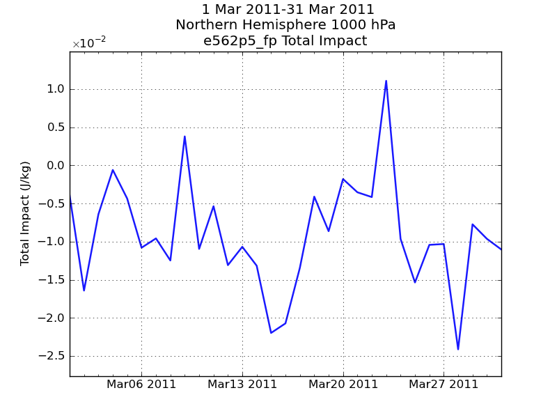
Explanation:
- the first line imports all the modules necessary to plot observation statistics
- an obsdocument is an object which contains observation (or observation impact) statistic plots.
- the document contains one plot template, plot which is a timeseriesplot. Plots of this kind display statistic values against dates which are specified.
- the plot contains a curve wich is a line, that line should show radiosonde wind vector data. In the document part, type=’im’ specifies that we are plotting observation impacts, type=’ob’ would request observation data.
- variable is the ODS file variable the statistics were computed on.
- the other keywords should be self explanatory.
note: the plot main title, legend and y-title are generated automatically using the metadata available from the directives. These can be tailored or overwritten by the user. We will come back to these later in the tutorial.
We have three main classes involved in creating this plot:
- obsdocument
- timeseriesplot
- curve
Let’s first explain how their relationship influences the production of plots (let’s call it the doc-plot-curve relationship). This relationship conditions all kinds of plots. In the observing system, there is a list of keywords (dimensions) which determine the choice of observations (this list could possibly evolve in the future):
- kx
- kt
- date
- level
- type of level
- domain_name
- variable (original name of the ODS variable)
- statistic name
- usage (used, all, passive)
We can add, in order to make sure that each observation is unique (this list could possibly evolve in the future):
expver or expid, the experiment id
- source, this is an arbitrary parameter which is necessary for the system to function properly, at the time of writing, it could be:
- oper generated by a system handled by OPS
- exp generated by a research experiment
- odas generated by the ocean analysis system
- aer generated by the aerosol system.
All these properties can be defined at any level in the doc-plot-curve relationship, but the lower down they are defined (towards the curve) the more precedence they have.
A list of values specified at document level means: create a separate plot for each value in this list (example 2):
from gmaopy.modules.obsplot import * document( plotdata = obsdata( type = 'im', database = 'im_ops', variable = 'xvec', domain = ['global','n.hem'], # <-- the change expver = 'e562p5_fp', level = 1000, levtype = 'pl', statistic = 'impact_per_anl', date = Dates(2011030100,2011033100,24), ), plot = timeseriesplot( curve = line( plotdata = obsdata( # RaobDsnd kx = [120,220,221,132,229,232], kt = [4,5,11,44] ), ) ), layout = [1,2], # <-- another change has_title = True, # <-- just one title at document level interactive = False, output = 'example2.png', )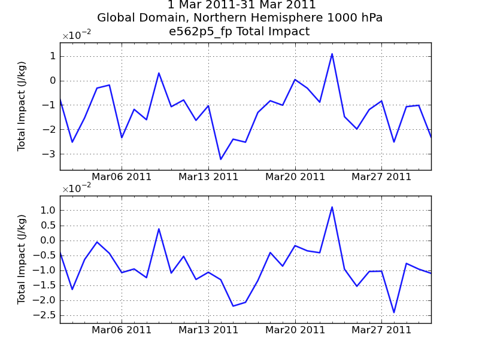
Please note that since the graphical layout has more than one plot per page, we added the statement has_title=True in the document to have unique title for all the plots. This is often more suitable, but if the user wants to keep a title for each plot, it is also possible although there are often physical overlaps beetween graphics and texts.
A list of values specified at plot level means: create a separate curve for each value in this list (example 3):
from gmaopy.modules.obsplot import * document( plotdata = obsdata( type = 'im', database = 'im_ops', variable = 'xvec', expver = 'e562p5_fp', level = 1000, statistic = 'impact_per_anl', date = Dates(2011030100,2011033100,24), ), plot = timeseriesplot( plotdata = obsdata( domain = ['global','n.hem'], # <-- the change ), curve = line( plotdata = obsdata( # RaobDsnd kx = [120,220,221,132,229,232], kt = [4,5,11,44] ) ) ), layout = [1,1], # <-- back to one plot a page interactive = False, output = 'example3.png', )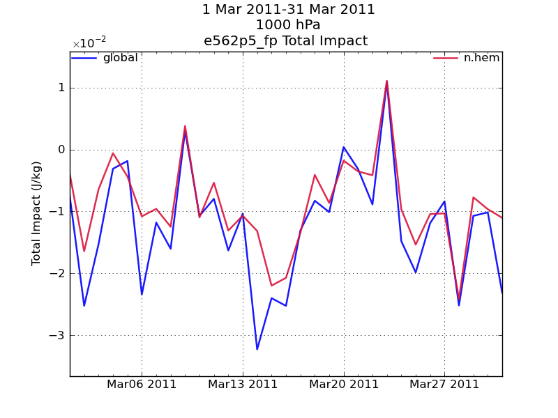
Small digression:
in this example, the line: curve = line(... specifies explicitely that a line is expected to be drawn, try it with: curve = bar(... or curve = dot(... see the two following figures: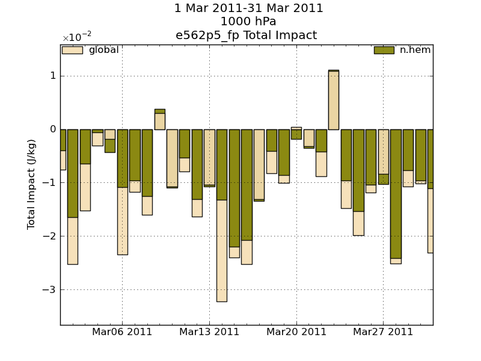
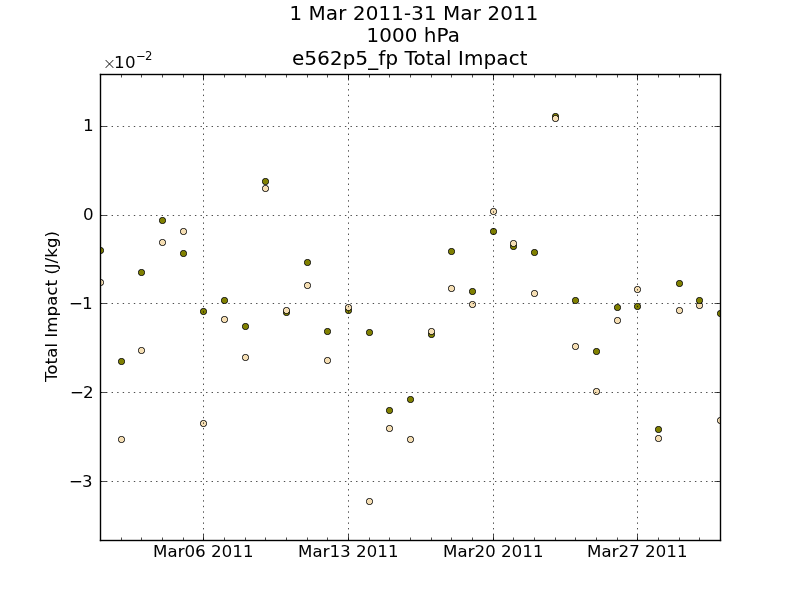
End of digression.
In the first case two plots with one curve are created, in the second case, one plot and two curves are generated. Please note that the plot of example 2 is not very easy to read since the scales of the curves are different, we can fix that and at the same time introduce some graphical attributes: (example 4):
from gmaopy.modules.obsplot import * document( plotdata = obsdata( type = 'im', database = 'im_ops', variable = 'xvec', domain = ['global','n.hem'], expver = 'e562p5_fp', level = 1000, statistic = 'impact_per_anl', date = Dates(2011030100,2011033100,24), ), plot = timeseriesplot( curve = line( plotdata = obsdata( # RaobDsnd kx = [120,220,221,132,229,232], kt = [4,5,11,44] ) ), yaxis = axis( # <- min = -0.04, # <- change max = 0.02 # <- ), # <- graphics = graphics( # <- linewidth = 3, # <- change grid = False, # <- ), # <- ), layout = [1,2], has_title = True, interactive = False, output = 'example4.png', )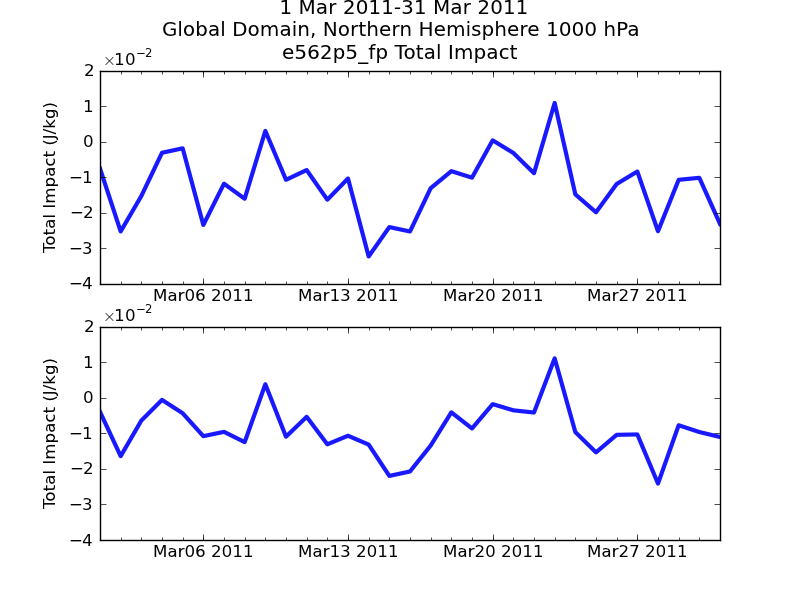
This is fine, but specifying different attributes can be lengthy, and the lines graphics=graphics( and yaxis=axis( are rather redundent. A way around that is provided, if preferred by the user, the first parameter when creating a plot can be a dictionary in which the keys are full paths to attributes, this is probably more readable as it groups graphical attributes together:
from gmaopy.modules.obsplot import * d = obsdocument( plot = timeseriesplot( { 'graphics.linewidth' : 3, 'graphics.grid': False, 'yaxis.min': -0.04, 'yaxis.max': 0.02, }, date = Dates(2011030100,2011033100,24), curve = line( # RaobDsnd kx = [120,220,221,132,229,232], kt = [4,5,11,44] ), ), type = 'im', variable = 'xvec', domain = ['global','n.hem'], expver = 'e562p5_fp', level = 1000, statistic = 'impact_per_anl', layout = [1,2], has_title = True, interactive = True, output = 'example4.png', )At document level, a new plot is generated for each value specified in lists, but also combinations are generated between different keywords. If we modify example 2 (example 5):
from gmaopy.modules.obsplot import * document( plotdata = obsdata( type = 'im', database = 'im_ops', variable = 'xvec', domain = ['global','n.hem'], # <-- two domains expver = 'e562p5_fp', level = [1000,500], # <-- two levels statistic = 'impact_per_anl', date = Dates(2011030100,2011033100,24), ), plot = timeseriesplot( { 'graphics.bar_color' : 'khaki' }, curve = bar( plotdata = obsdata( kx = [120,220,221,132,229,232], kt = [4,5,11,44], ) ), has_ytitle = False # <-- not enough room for that ), layout = [2,2], # <-- room for more plots has_title = True, interactive = False, output = 'example5.png', )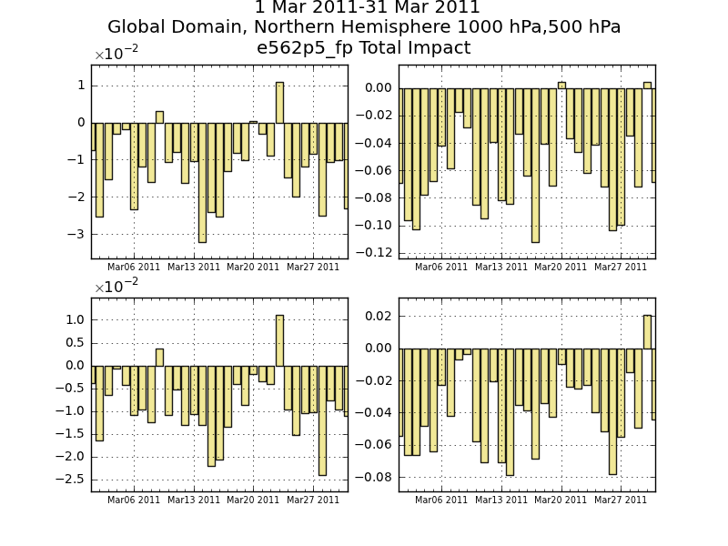
Two comments need to be made regarding this plot:
- the legend in the top right plot is a little too close to the bars,
- the default templates for the document title and the legend do not work very well in this scenario for the plot.
We can fix all that (example 6):
from gmaopy.modules.obsplot import * document( plotdata = obsdata( type = 'im', database = 'im_ops', variable = 'xvec', domain = ['global','n.hem'], expver = 'e562p5_fp', level = [1000,500], statistic = 'impact_per_anl', date = Dates(2011030100,2011033100,24), ), plot = timeseriesplot( { 'graphics.bar_color' : 'khaki', 'yaxis.max_bound_padding' : 0.15 #<- give some space }, title = [None,None,'<statistic>','<parameter>'], #<- modify title template curve = bar( plotdata = obsdata( kx = [120,220,221,132,229,232], kt = [4,5,11,44], ), legend = '<domain_name> <level>', #<- modify legend template ), has_ytitle = False ), layout = [2,2], has_title = True, interactive = False, output = 'example6.png', )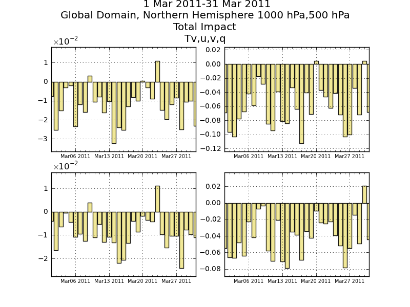
In order to fix the two problems:
- we set the attribute max_bound_padding of the yaxis to 0.15 (the default is 0.10). This represent the percentage of max - min to be added at the top of the plot as padding.
- we modified the template of the document. It is a list of strings, each element represents a line. None in the list means keep the standard template. Any text can be written in each line, <variables> are enclosed in <>. The same is done for the legend which is a single line.
There are many different structures enabling the customization of plots. You can find a complete reference in directives where you can find there the documentation for graphics and axis. We could have “fixed” the top right plot by specifying:
{ 'graphics.bar_color' : 'khaki', 'legend.loc': 'lower left', 'legend.prop.size': 'x-small' },Please refer to plotlegend and plotfont for more information.
If you have set your PATH variable to point to $GMAOPY, you can issue the command:
dirdoc plotlegend (or any valid name)to see that documentation inline. The command:
dirdocshows the list of valid directives.
In the examples below, kt and kx are specified at curve level. Depending of the type of plot we want to generate, the distribution of kt / kx combinations can change. In an attempt to avoid comlicating the system too much we settled for the following approach:
- at document level, you can optionally specify a file name containing a list of kt and kx. A plot will be generated for each kt / kx combination.
- at plot level, you can also specifiy a filename, a curve (or bar) will be generated for each kt / kx combination.
- at curve level, you can specify kt / kx combinations manually, no file can be specified.
Here is an example of a file with the definition of observation groups: kt/kx combinations`:
[aircraft] kx = 130,131,132,133,134,135,230,231,232,233,234,235 kt = 4,5,44 [aqua_airs] kx = 49 kt = 40 [amsre] kx = 547,548,549 kt = 40 [amsua] kx = 315,316,317,318,319,300,325 kt = 40 [amsub] kx = 415,416,417 kt = 40 [ascat_wind] kx = 290 kt = 4,5 [dropsondes] kx = 132,232 kt = 4,5,11,44 [goes] kx = 57,58,59,60,61,62,63 kt = 40 [gpsro] kx = 4,41,42,722,723,740,741,742,743,744,745,786,820 kt = 88 [hirs] kx = 5,6,7,8,9,10,11,12,14,15,16,17,18,19,25 kt = 40 [iasi] kx = 875 kt = 40 [land_sfc] kx = 181,187,281,287 kt = 4,5,11,33,44 [marine_sfc] kx = 180,182,183,280,282,284 kt = 4,5,11,33,44 [mhs] kx = 818,819,825 kt = 40 [modis_wind] kx = 257,258,259 kt = 4,5 [msu] kx = 205,206,207,208,209,210,211,212,214 kt = 40 [nexrad_wind] kx = 224 kt = 4,5 [pibal] kx = 221 kt = 4,5 [profiler_wind] kx = 223 kt = 4,5 [radiosondes] kx = 120,220 kt = 4,5,11,33,44 [satellite_wind] kx = 241,242,243,245,246,247,248,249,250,251,252,253,254,255,256 kt = 4,5 #[sbuv_ozone] #kx = 457,458,459,460,461,462,464,465,466,467,468,469 #kt = 21,22 [ssmi_rad] kx = 708,710,711,713,714,715 kt = 40 [ssu] kx = 305,306,307,308,309,310,311,312,314 kt = 40 [tmi_rain_rate] kx = 211 kt = 17 [windsat_wind] kx = 289 kt = 4,5
We can now use this definition file to introduce a new type of plot, the summary of averaged observation impacts for different observation groups (example 7):
from gmaopy.modules.obsplot import * document( plotdata = obsdata( type = 'im', database = 'im_ops', variable = 'xvec', domain = ['global'], expver = 'e562p5_fp', date = Dates(2011030100,2011033100,24), ), plot = [ summaryplot( plotdata = obsdata( statistic = 'impact_per_anl', filename = 'summary_all.def', ), ) ], interactive = False, output = 'example7.png', )Configuration files can be a great shortcut for plots like this one: We obtain a plot summarizing the performance of different observing systems:
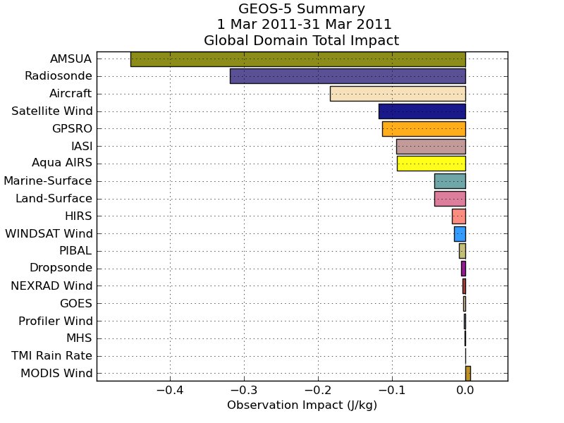
As you can see, the bars are sorted in an increasing order, this is the default behaviour. You can control that by adding the statement:
d = obsdocument( plot = [ summaryplot( statistic = 'impact_per_anl', filename = 'summary_all.def', sort = 'descreasing' ) ], ...to obtain:
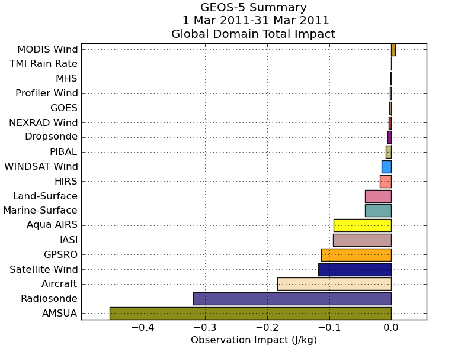
or to keep the order in which the file ‘summary_all.def’ is read (random):
d = obsdocument( plot = [ summaryplot( statistic = 'impact_per_anl', filename = 'summary_all.def', sort = None ) ], ...to obtain:
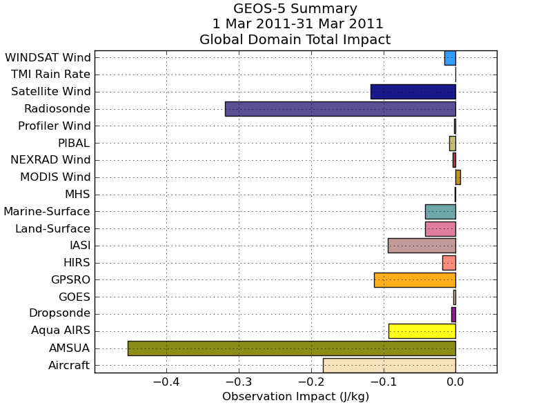
You can add a field called ‘rank’ in each group allowing you to then sort the curve according with the rank:
[aircraft] kx = 130,131,132,133,134,135,230,231,232,233,234,235 kt = 4,5,44 rank = 0 [aqua_airs] kx = 49 kt = 40 rank = 1You can then specify:
d = obsdocument( plot = [ summaryplot( statistic = 'impact_per_anl', filename = 'summary_all.def', sort = 'rank_increasing' # or 'rank_decreasing' ) ], ...to obtain:
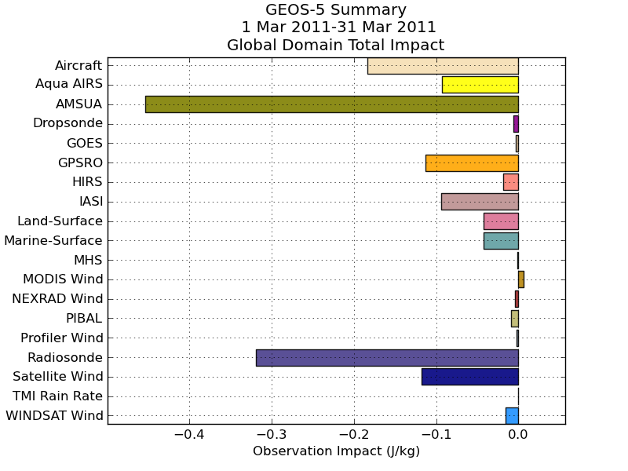
note: in the previous examples, the same color is allocated to the same observing system independently of the way the bars are sorted. This is to facilitate the comparison between plots. Please also note that if observing systems are missing, they are eliminated from the plot. This could cause some difficulties when comparing plots where observing systems are present only for some of them. If you wish to have missing systems displayed as well, set the plot option ‘removeMissing’ to False. Should you want to change the bar colors (example 8):
from gmaopy.modules.obsplot import * document( plotdata = obsdata( type = 'im', database = 'im_ops', variable = 'xvec', domain = ['global'], expver = 'e562p5_fp', date = Dates(2011030100,2011033100,24), ), plot = [ summaryplot( plotdata = obsdata( filename = 'summary_all.def', statistic = ['impact_per_anl'], ), graphics = graphics( bar_color = ['salmon','navy','mistyrose','grey','lightpink','darkred','lightgrey','lightgreen','lightyellow','orange','pink','green','red','cyan','white','orange','black','blue','yellow'] ) ) ], interactive = False, output = 'example8.png', )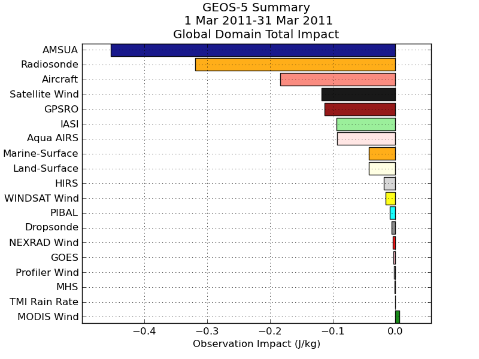
You can also specify a reptitive pattern (example 9):
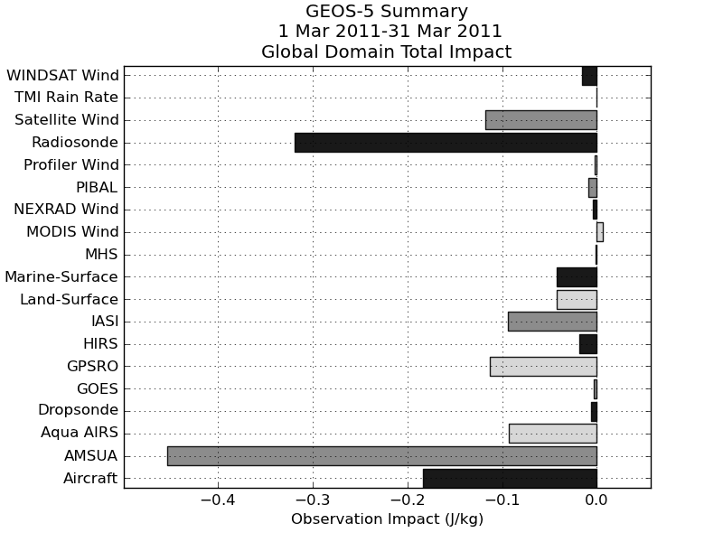
It can be useful to use a color map to represent the colors we use, there are quite a few defined in matplotlib. When using the same scale for all plots, colors give a good indication of the values on different plots, even if they have a different yaxis scale. In this example, the values are valid for the impact per analysis statistic (example 10):
from gmaopy.modules.obsplot import * document( plotdata = obsdata( type = 'im', database = 'im_ops', variable = 'xvec', domain = ['global'], expver = 'e562p5_fp', date = Dates(2011030100,2011033100,24), ), plot = [ summaryplot( plotdata = obsdata( filename = 'summary_all.def', statistic = ['impact_per_anl'], ), colormap = colormap( min = -0.4, max = 0.1, step = 0.05, ), ) ], interactive = False, output = 'example10.png', )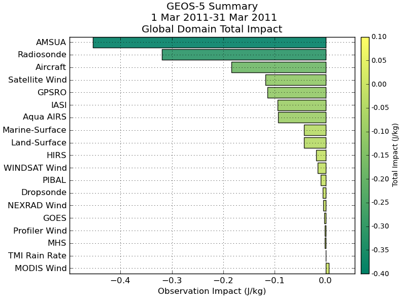
An alternative way of using color maps is to use each color to give an indication of another statistic. This can be done using the dualobservingsystem plot (example 11):
from gmaopy.modules.obsplot import * document( plotdata = obsdata( type = 'im', database = 'im_ops', variable = 'xvec', domain = ['global'], expver = 'e562p5_fp', date = Dates(2011030100,2011033100,24), ), plot = [ summaryplot( plotdata = obsdata( filename = 'summary_all.def', statistic = 'impact_per_anl', colormap_statistic = 'count' ), colormap = colormap() ) ], interactive = False, output = 'example11.png', )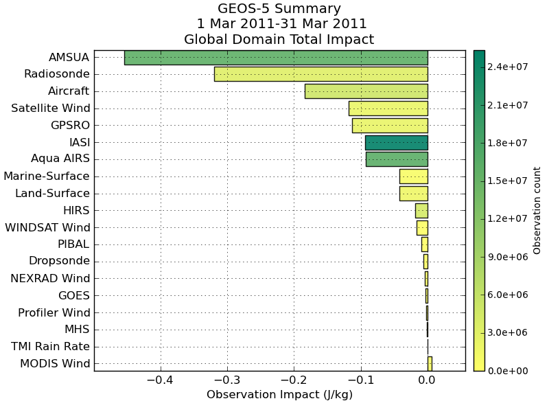
Any pair of statistics can be defined (example 12):
from gmaopy.modules.obsplot import * document( plotdata = obsdata( type = 'im', database = 'im_ops', variable = 'xvec', domain = ['global'], expver = 'e562p5_fp', date = Dates(2011030100,2011033100,24), ), plot = [ summaryplot( plotdata = obsdata( filename = 'summary_all.def', statistic = 'beneficial', colormap_statistic = 'impact_per_anl', ), colormap = colormap() ) ], interactive = False, output = 'example12.png', )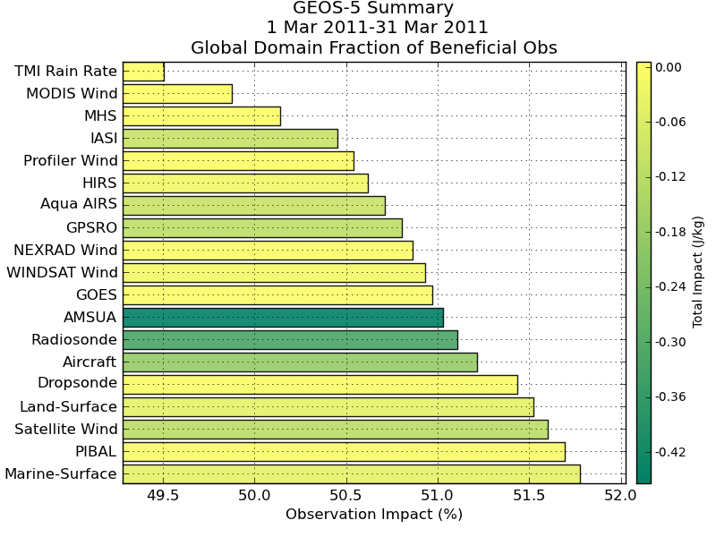
The other way around (example 13):
from gmaopy.modules.obsplot import * document( plotdata = obsdata( type = 'im', database = 'im_ops', variable = 'xvec', domain = ['global'], expver = 'e562p5_fp', date = Dates(2011030100,2011033100,24), ), plot = [ summaryplot( plotdata = obsdata( filename = 'summary_all.def', statistic = 'impact_per_anl', colormap_statistic = 'beneficial', ), colormap = colormap() ), ], interactive = False, output = 'example13.png', )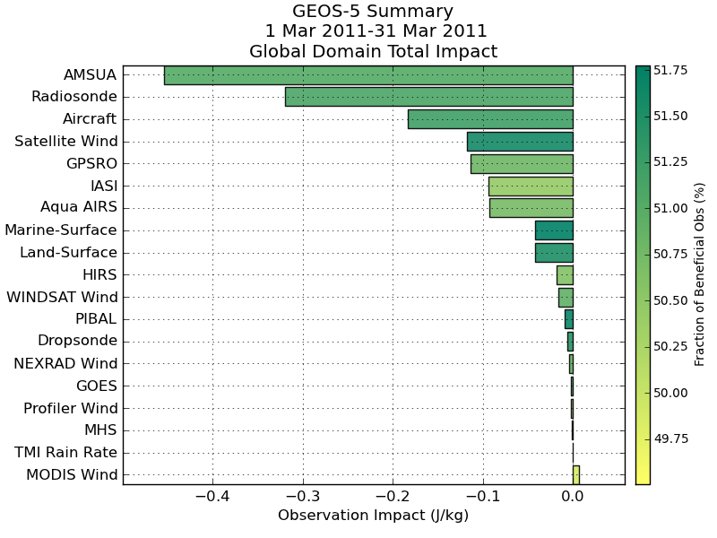
Please note that color map is reversed to ensure that the greener the color, the better the statistic (here the fraction of benefical observations is a percentage).
We can introduce another plot which draws a vertical cross-section (example 14):
from gmaopy.modules.obsplot import * document( plotdata = obsdata( type = 'im', database = 'im_ops', date = Dates(2011030100,2011033100,24), expver = 'e562p5_fp', variable = 'xvec', domain = 'global', statistic = 'impact_per_anl', level = 'all', ), plot = [ verticalxsection( curve = line( plotdata = obsdata( kx = 220, kt = 4, ) ), xtitle = 'Impact' ), ], layout = [3,1], interactive = False, output = 'example14.png', )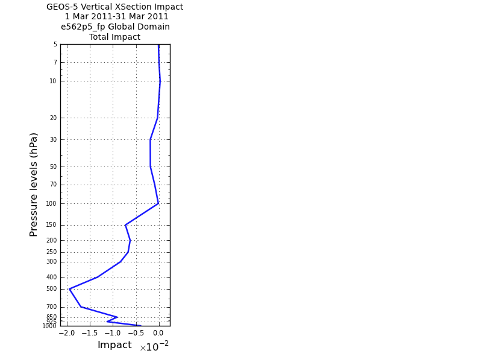
We can for example, compare two different months (example 15):
from gmaopy.modules.obsplot import * document( plotdata = obsdata( type = 'im', database = 'im_ops', expver = 'e562p5_fp', variable = 'xvec', domain = 'global', statistic = 'impact_per_anl', level = 'all', ), plot = [ verticalxsection( curve = [ line( plotdata = obsdata( kx = 220, kt = [4,5], date = Dates(2011020100,2011022800,24), ), legend = '<parameter>,Feb' ), line( plotdata = obsdata( kx = 220, kt = [4,5], date = Dates(2011030100,2011031000,24), ), legend = '<parameter>,Mar' ), ], xtitle = 'Impact', title = [None,'',None,None] ), ], layout = [3,1], interactive = False, output = 'example15.png', )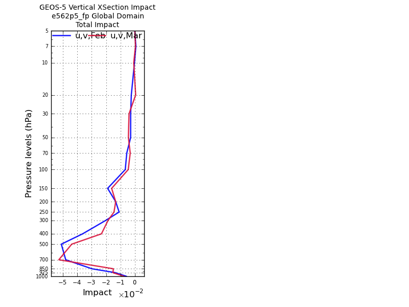
We can introduce another type of plot which draws statistics for different pressure levels (example 16):
from gmaopy.modules.obsplot import * document( plotdata = obsdata( type = 'ob', database = 'ob_ops', expver = 'e572p2_fp', date = Dates(2012010100,2012013118,6), ), plot = [ levelplot( { 'graphics.bar_color': ['lime','red'], 'graphics.alpha': 1.0, 'xaxis.min': 0, }, plotdata = obsdata( variable = 'oma', statistic = 'count', domain = ['global'], level = 'all', #level = [5.0, 7.0, 10.0, 20.0, 30.0, 50.0, 70.0, 100.0, 150.0, 200.0, 250.0, 300.0, 400.0, 500.0, 700.0, 850.0, 925.0, 1000.0] ), curve = [ stackedbar( plotdata = obsdata( usage = "used", kx = 220, kt = [4,5] ) ), stackedbar( plotdata = obsdata( usage = "passive", kx = 220, kt = [4,5] ) ) ], graphics = graphics( grid = False ) ), ], interactive = False, output = 'example16.png', )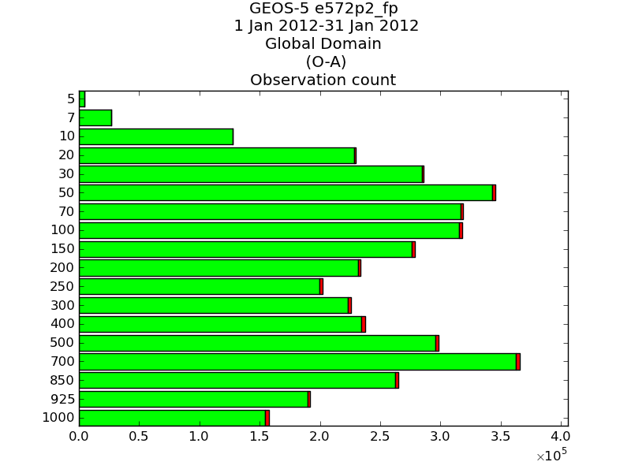
Different statistics can be displayed (example 17):
from gmaopy.modules.obsplot import * document( plotdata = obsdata( type = 'ob', database = 'ob_ops', expver = 'e572p2_fp', date = Dates(2012010100,2012013118,6), ), plot = [ levelplot( { 'graphics.bar_color': ['red','blue','gold','cyan'], 'graphics.alpha': 1.0 }, plotdata = obsdata( statistic = ['normcost'], variable = ['oma','omf'], domain = ['global'], level = 'all', ), graphics = graphics( grid = False ), curve = shiftedbar( plotdata = obsdata( kx = 220, kt = [4,5], ), ) ), ], interactive = False, output = 'example17.png' )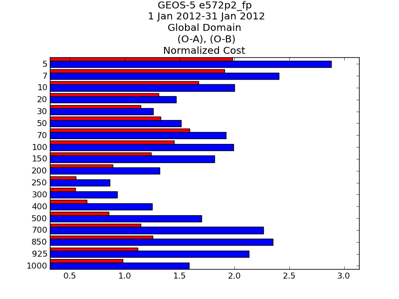
And finally a rather familiar plot (example 18):
from gmaopy.modules.obsplot import * document( plotdata = obsdata( domain = ['global'], type = 'ob', database = 'ob_ops', expver = 'e572p2_fp', date = Dates(2012010100,2012013118,6), ), plot = [ levelplot( { 'graphics.bar_color': ['lime','darkorange','red'], 'graphics.alpha': 1.0, 'xaxis.min' : 0, 'yaxis.absolute_max': 8 }, plotdata = obsdata( variable = 'oma', statistic = 'count', level = 'all', ), curve = [ stackedbar( plotdata = obsdata( usage = "used", kx = 220, kt = [4,5] ) ), stackedbar( plotdata = obsdata( usage = "passive", kx = 220, kt = [4,5] ) ), stackedbar( plotdata = obsdata( usage = "unused", kx = 220, kt = [4,5] ) ) ], graphics = graphics( grid = False ) ), levelplot( { 'graphics.bar_color': ['blue','red','cyan','darkorange'], 'graphics.alpha': 1.0 , 'yaxis.absolute_max': 8}, plotdata = obsdata( statistic = ['rms','mean'], level = 'all', usage = ["used","passive"], variable = ['omf','oma'], ), graphics = graphics( grid = False ), curve = shiftedbar( plotdata = obsdata( kx = 220, kt = [4,5] ) ) ), levelplot( { 'graphics.bar_color': ['blue','red'], 'graphics.alpha': 1.0, 'xaxis.min' : 0 , 'yaxis.absolute_max': 8}, plotdata = obsdata( statistic = ['normcost'], variable = ['omf','oma'], usage = ["used","passive"], level = 'all', ), graphics = graphics( grid = False ), curve = shiftedbar( plotdata = obsdata( kx = 220, kt = [4,5] ) ) ), levelplot( { 'graphics.bar_color': ['cyan','blue'], 'graphics.alpha': 1.0, 'xaxis.min' : 0, 'yaxis.absolute_max': 8 }, plotdata = obsdata( level = 'all', ), curve = [ bar( plotdata = obsdata( statistic = 'mean', variable = 'xvec', kx = 220, kt = [4,5] ) ), bar( plotdata = obsdata( statistic = 'rms', variable = 'xvec', kx = 220, kt = [4,5] ) ), dot( plotdata = obsdata( variable = 'esigo', statistic = 'esigo', usage = ["used","passive"], kx = 220, kt = [4,5], ), graphics = item( color = 'darkorange', markersize = 8 ) ), dot( plotdata = obsdata( variable = 'esigb', statistic = 'esigb', usage = ["used","passive"], kx = 220, kt = [4,5], ), graphics = item( color = 'black', markersize = 8 ) ), ], graphics = graphics( grid = False ) ), ], layout = [2,2], size = [10,7], has_title = True, title = ['GEOS-5 Observation Monitoring','<name>','<month>'], interactive = False, output = 'example18.png' )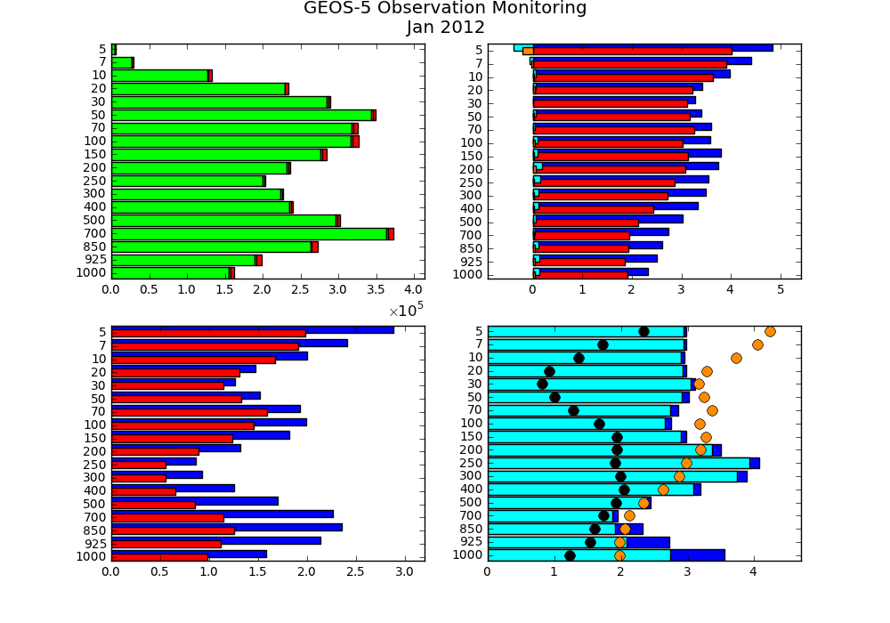
This is plot is a slight variation of the plot by level (example 19):
from gmaopy.modules.obsplot import * document( plotdata = obsdata( date = Dates(2011080100,2011083100,24), expver = 'e572p1_fp', type = 'im', database = 'im_ops', variable = 'xvec', domain = ['global'], statistic = 'impact_per_anl', ), plot = channelplot( { 'graphics.grid': False }, plotdata = obsdata( channel = 'all', ), colormap = colormap( min = -0.22, max = 0.14, step = 0.02, ), curve = bar( plotdata = obsdata( # airs kx = 49, kt = 40 ), ), ), interactive = False, output = 'example19.png' )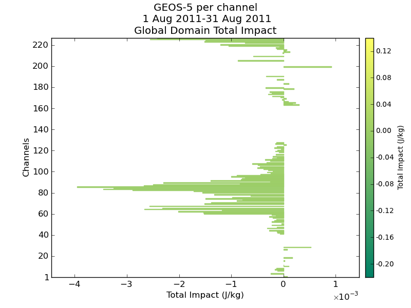
As we have seen above, a configuration file can be used to specify the groups of observations we want to plot, these an be used for mass plotting. This script is similar to a script running in operations, see //http://gmao.gsfc.nasa.gov/products/forecasts/systems/fp/obs_impact/ (example 20):
from gmaopy.modules.obsplot import * document( plotdata = obsdata( filename = 'timeseries_all.def', date = Dates(2010090100,2011083100,24), type = 'im', database = 'im_ops', variable = 'xvec', domain = ['global'], ), plot = [ timeseriesplot( plotdata = obsdata( statistic = 'impact_per_anl' ), has_legend = False, colormap = colormap( min = -0.4, max = 0.1, step = 0.05, ), curve = bar( plotdata = obsdata( datefile = 'dates.def' ) ), ), timeseriesplot( plotdata = obsdata( statistic = 'impact_per_ob' ), has_legend = False, colormap = colormap( min = -1.e-5, max = -1.e-8, step = (-1.e-8 - -1.e-5) / 2, ), curve = bar( plotdata = obsdata( datefile = 'dates.def' ), ), ), timeseriesplot( plotdata = obsdata( statistic = 'beneficial' ), has_legend = False, colormap = colormap( min = 48.0, max = 54.0, step = 1.0 ), curve = bar( plotdata = obsdata( datefile = 'dates.def' ) ), ) ], interactive = False, output = 'timeseries_<name>_<domain_name>_<statistic>.png', size = [11,6] )Here is a sample of what is produced by the plot:
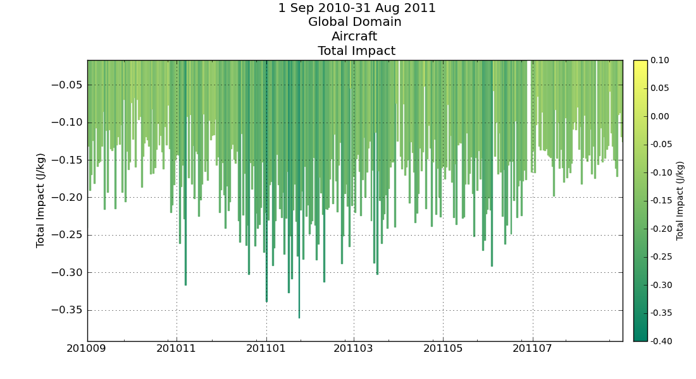
We need to explain further three features in this plot:
- the observation file,
- the date file,
- the output name
The file timeseries_all.def contains a list of groups of observations to be plotted kt/kx combinations`.
Whenever you need to plot long timeseries or aggregate statistics over a long period of time, the data you need to retrieve from the database might be tagged with different experiment IDs. The curve object accepts a keyword: datefile which is a file which defines date intervals together with experiment IDS (expver):
[a] expver = e562p3_fp start = 2010081600 end = 2010110118 step = 6 archive_location = /archive/dao_ops/GEOS-5_pre_ops/GEOSadas-5_6_2_p3/e562p3_fp/obs [b] expver = e562p4_fp start = 2010110200 end = 2011010118 step = 6 archive_location = /archive/dao_ops/GEOS-5_pre_ops/GEOSadas-5_6_2_p4/e562p4_fp/obs [c] expver = e562p5_fp start = 2011010200 end = 2011033118 step = 6 archive_location = /archive/dao_ops/GEOS-5_pre_ops/GEOSadas-5_6_2_p5/e562p5_fp/obs [d] expver = e571_fp start = 2011040100 end = 2011050118 step = 6 archive_location = /archive/dao_ops/GEOS-5.7.1/GEOSadas-5_7_1/e571_fp/obs [e] expver = e571p1_fp start = 2011050200 end = 2011062918 step = 6 archive_location = /archive/dao_ops/GEOS-5.7.1/GEOSadas-5_7_1_p1/e571p1_fp/obs [f] expver = e572_fp start = 2011063000 end = 2011073118 step = 6 archive_location = /archive/dao_ops/GEOS-5.7.2/GEOSadas-5_7_2/e572_fp/obs [g] expver = e572p1_fp start = 2011080100 end = 2011083118 step = 6 archive_location = /archive/dao_ops/GEOS-5.7.2/GEOSadas-5_7_2_p1/e572p1_fp/obs [h] expver = e572p2_fp start = 2011090100 end = 2011120618 step = 6 archive_location = /archive/dao_ops/GEOS-5.7.2/GEOSadas-5_7_2_p2/e572p2_fp/obs [i] expver = e572p2_fp start = 2011120600 end = 2012040418 step = 6 archive_location = /archive/dao_ops/GEOS-5.7.2/GEOSadas-5_7_2_p2_m1/e572p2_fp/obs [j] expver = e572p5_fp start = 2012040500 end = 2012050918 step = 6 archive_location = /archive/dao_ops/GEOS-5.7.2/GEOSadas-5_7_2_p5/e572p5_fp/obs [k] expver = e572p5_fp start = 2012051000 end = 2012083118 step = 6 archive_location = /archive/dao_ops/GEOS-5.7.2/GEOSadas-5_7_2_p5_m1/e572p5_fp/obs
note: the name of the section (between square brackets), are abitrary, anything can be used provded that it is unique.
The output keyword in this directive defines the filename of the graphics file(s) to generate. When many plots are generated, it is preferable to follow some file naming convention. The file name can be parameterized in a way which is rather similar to the titles (although not everything which works for a title might work for the file name):
output = 'timeseries_<name>_<domain_name>_<statistic>.png',If the filename is not parameterized in satisfactory way, the program will complain and stop in order to avoid overwriting an existing file. In doubt, you can always add <count> in the filename, which is a counter per unique file name, this ensures that file names are unique.
A mechanism to read data from ODS files has been put in place to enable the creation of plots handling raw data. Some standard plots are available, while new ones can quite easily be programmed requiring a little knowledge of matplotlib. Since observations are accessed directly from an ODS file, ODS plot directives are quite similar to Obsstat directives.
A useful application of this is to plot geographical data coverage (example 21):
from gmaopy.modules.obsplot import * document( plotdata = odsdata( type = 'ob', domain = ['global'], expver = 'e561_tst_02', date = 2011020100, source = 'oper' # this is required to be able to find the ODS files ), plot = [ coverageplot( curve = curve( { 'graphics.color': 'lime'}, plotdata = odsdata( kt = 44, kx = 120, usage = ['used'], ) ), ), ], interactive = False, output = 'example21.png' )The curve contains the description of the observation(s) required to create the plot. Just as the Obsstat directive, data can be aggregated (e.g. all level, different days, runs, observation types etc...), the coverage of a couple of days or a whole month can be plotted (example 22):
from gmaopy.modules.obsplot import * document( plotdata = odsdata( type = 'ob', domain = ['global'], expver = 'e561_tst_02', date = Dates(2011020100,2011020100,6), source = 'oper' ), plot = [ coverageplot( curve = curve( { 'graphics.color': 'lime'}, plotdata = odsdata( kt = [4,5], kx = 220, usage = ['used'], ) ), ), ], interactive = False, output = 'example22.png' )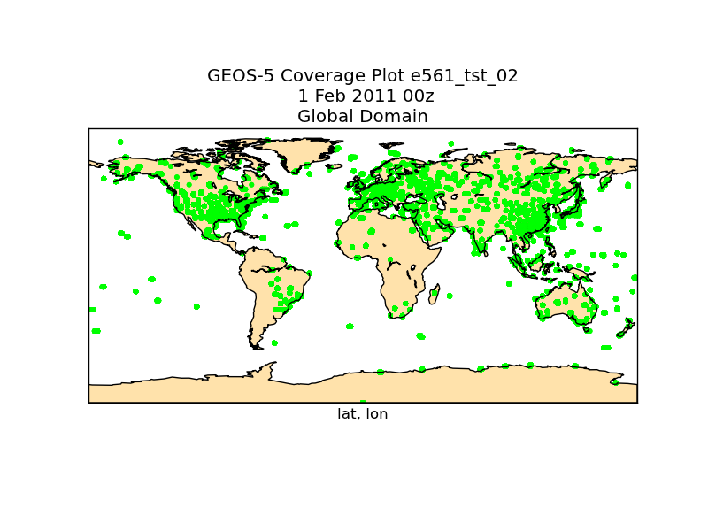
By specifying a collection of curves, different attributes can be modified (example 23):
from gmaopy.modules.obsplot import * document( plotdata = odsdata( type = 'ob', domain = ['global'], expver = 'e561_tst_02', date = 2011020100, source = 'oper' ), plot = [ coverageplot( curve = [ curve( { 'graphics.color': 'darkorange'}, plotdata = odsdata( kt = 44, kx = 120, usage = ['passive'], ) ), curve( { 'graphics.color': 'red'}, plotdata = odsdata( kt = 44, kx = 120, usage = ['unused'], ) ), curve( { 'graphics.color': 'lime'}, plotdata = odsdata( kt = 44, kx = 120, usage = ['used'] ) ), ] ), ], interactive = False, output = 'example23.png' )Please note that the order of the curves does matter (example 24):
from gmaopy.modules.obsplot import * document( plotdata = odsdata( type = 'ob', domain = ['global'], expver = 'e561_tst_02', date = 2011020100, source = 'oper' ), plot = [ coverageplot( { 'symbol.alpha': 0.5 }, curve = [ curve( { 'graphics.color': 'lime'}, plotdata = odsdata( kt = 44, kx = 120, usage = ['used'] ) ), curve( { 'graphics.color': 'red'}, plotdata = odsdata( kt = 44, kx = 120, usage = ['unused'], ) ), curve( { 'graphics.color': 'darkorange' }, plotdata = odsdata( kt = 44, kx = 120, usage = ['passive'], ) ), ] ), ], interactive = False, output = 'example24.png' )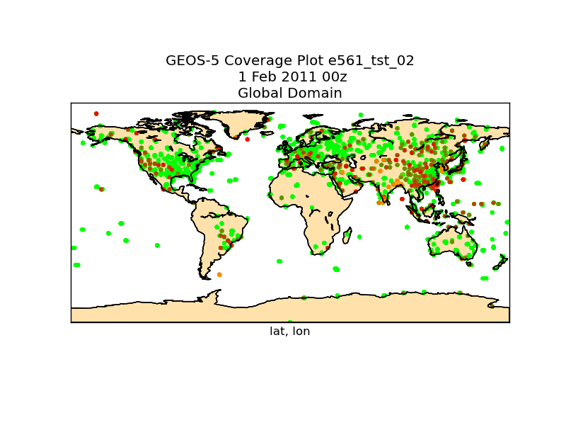
Defining observers: observers are python objects which can be specified and called regularly to count observations or perhaps even compute global statistics. A predefined observer has been created to work with ODS plots, it is called odscounter. An observer is given a name which is then recognized by the application and be used as a variable in titles, legends etc... The format is optional, it can either be a standard python formatting string (.e.g “%d” or “value: %d”) or the name of a function in semperpy.core.format. In this example, an odscounter is defined in each curve, to count the number of observations defined in that curve, while an odscounter is created at plot level, counting all the observations in all the curves, therefore obtaining the total number of observations. (example 24):
from gmaopy.modules.obsplot import * document( plotdata = odsdata( type = 'ob', domain = ['global'], expver = 'e561_tst_02', date = 2011020100, source = 'oper' ), plot = [ coverageplot( { 'symbol.alpha': 0.5 }, plotdata = odsdata( observer = odscounter(varname='total_obs',format='bigNumber') ), title = [None,None,None,'Total number of observations: <total_obs>'], curve = [ curve( { 'graphics.color': 'lime'}, plotdata = odsdata( kt = 44, kx = 120, usage = ['used'], observer = odscounter(varname='total_used',format='bigNumber'), ), legend = '<total_used> used' ), curve( { 'graphics.color': 'red'}, plotdata = odsdata( kt = 44, kx = 120, usage = ['unused'], observer = odscounter(varname='total_rejected',format='bigNumber'), ), legend = '<total_rejected> rejected' ), curve( { 'graphics.color': 'darkorange' }, plotdata = odsdata( kt = 44, kx = 120, usage = ['passive'], observer = odscounter(varname='total_passive',format='bigNumber'), ), legend = '<total_passive> passive' ), ], has_xtitle = False, has_legend = True, legend = plotlegend( mode = None, loc = 'outside bottom', prop = plotfont( size = 'small' ), handletextpad = -0.2, ) ), ], interactive = False, output = 'example24.0.png' )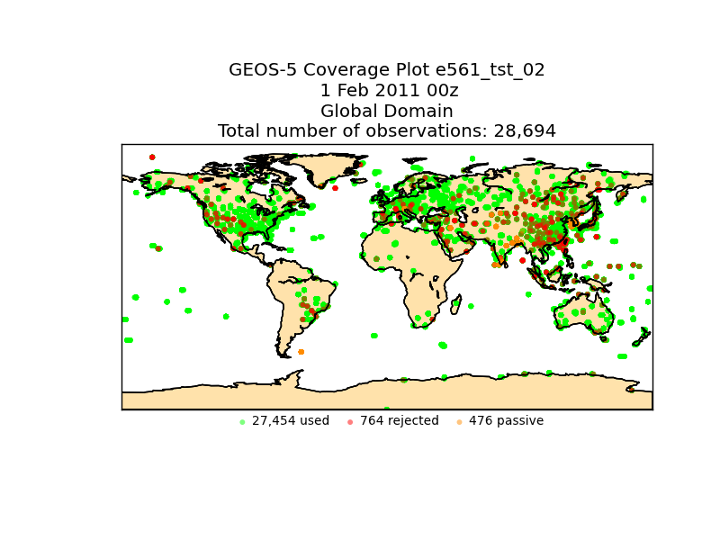
Another useful application of the coverage plot, is to display symbols for each observation location and color code it so that the plot gives an indication of the values of the variable being plotted. Let us assume that we would like to look at the values of omf over the globe, we can specify (example 24.1):
from gmaopy.modules.obsplot import * document( plotdata = odsdata( type = 'ob', domain = ['global'], expver = 'e561_tst_02', date = 2011020100, source = 'oper' # this is required to be able to find the ODS files ), plot = [ coverageplot( plotdata = odsdata( variable = 'omf' ), curve = curve( plotdata = odsdata( kt = 44, kx = 120, usage = ['used'], ) ), ), ], interactive = False, output = 'example24.1.png' )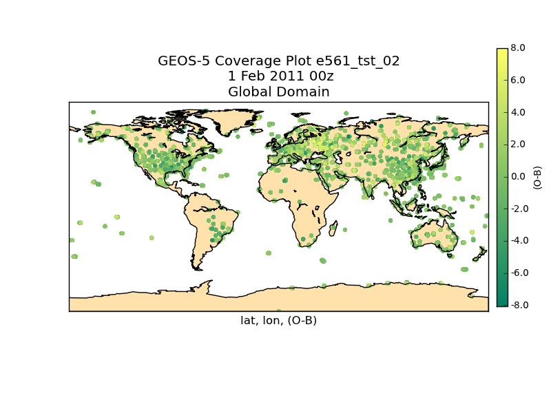
The color coding uses matplotlib standard colormaps, you can specify the colormap you wish to use (see for example: http://www.scipy.org/Cookbook/Matplotlib/Show_colormaps). If you postfix the name of the colormap with ‘_r’ it is reversed. You can also specify a colormap object you instanciated: (example 24.2)
from gmaopy.modules.obsplot import * document( plotdata = odsdata( type = 'ob', domain = ['global'], expver = 'e561_tst_02', date = 2011020100, source = 'oper' # this is required to be able to find the ODS files ), plot = [ coverageplot( plotdata = odsdata( variable = 'omf' ), curve = curve( plotdata = odsdata( kt = 44, kx = 120, usage = ['used'], ) ), colormap = colormap(cmap = "winter") ), ], interactive = False, output = 'example24.2.png' )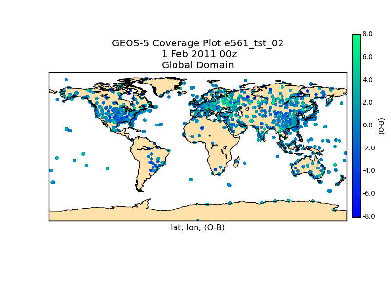
The coverage plot uses a special directive called geography which enables you to specify geographical attributes, such as projection, coastlines, continents, parallels, meridians etc... (example 24.3)
from gmaopy.modules.obsplot import * document( plotdata = odsdata( type = 'ob', domain = ['n.hem'], expver = 'e561_tst_02', date = 2011020100, source = 'oper' # this is required to be able to find the ODS files ), plot = [ coverageplot( plotdata = odsdata( variable = 'omf' ), geography = geography( projection = 'stere', lon_0 = 270, hemisphere = 'north', plot_over = ["coastlines","parallels","meridians"] ), curve = curve( plotdata = odsdata( kt = 44, kx = 120, usage = ['used'], ) ), ), ], interactive = False, output = 'example24.3.png' )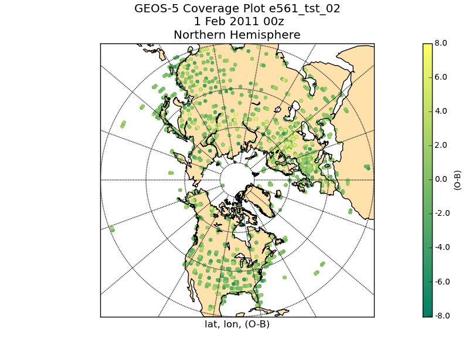
In this case, we specify n.hem for the area, but if we wanted to take a closer look at the north, we can force the geography to a different bounding box, using the keywords west, south, east and north (example 24.4):
from gmaopy.modules.obsplot import * document( plotdata = odsdata( type = 'ob', domain = ['n.hem'], expver = 'e561_tst_02', date = 2011020100, source = 'oper' # this is required to be able to find the ODS files ), plot = [ coverageplot( plotdata = odsdata( variable = 'omf' ), geography = geography( projection = 'stere', lon_0 = 270, hemisphere = 'north', south = 50, plot_over = ["coastlines","parallels","meridians"] ), curve = curve( plotdata = odsdata( kt = 44, kx = 120, usage = ['used'], ) ), ), ], interactive = False, output = 'example24.4.png' )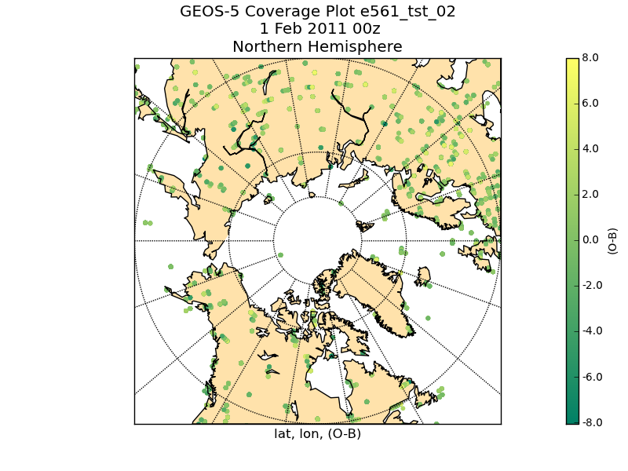
If you need to better discriminate between values, you can set you own minimum and maximum values (example 24.5)
from gmaopy.modules.obsplot import * document( plotdata = odsdata( type = 'ob', domain = ['n.hem'], expver = 'e561_tst_02', date = 2011020100, source = 'oper' # this is required to be able to find the ODS files ), plot = [ coverageplot( plotdata = odsdata( variable = 'omf' ), colormap = colormap( min = -2, max = 2, ), geography = geography( projection = 'stere', lon_0 = 270, hemisphere = 'north', south = 50, plot_over = ["coastlines","parallels","meridians"] ), curve = curve( plotdata = odsdata( kt = 44, kx = 120, usage = ['used'], ) ), ), ], interactive = False, output = 'example24.5.png' )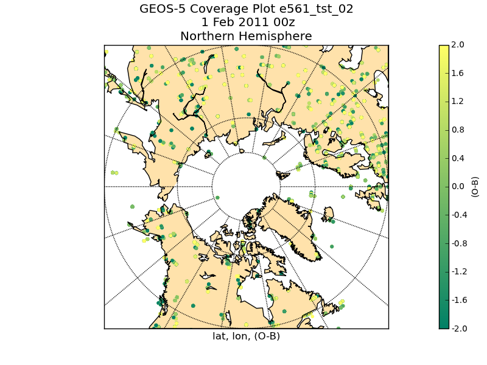
Another useful application is a scatter plot, for examples, scatter observation impacts versus the innovation (xvec vs. omf) (example 25):
from gmaopy.modules.obsplot import * document( plotdata = odsdata( channel = 6, type = 'im', domain = ['global'], expver = 'e562p3_fp', date = 2010101300, source = 'oper' ), plot = [ scatterplot( { 'symbol.edgecolor': 'grey', 'graphics.color': 'purple' }, plotdata = odsdata( variable = ['omf','xvec'], ), curve = curve( plotdata = odsdata( kt = 40, kx = 319 ), ), xaxis = axis(min = -0.8,max = 0.8), yaxis = axis(min = -0.00025,max = 0.00025) ), ], interactive = False, output = 'example25.png' )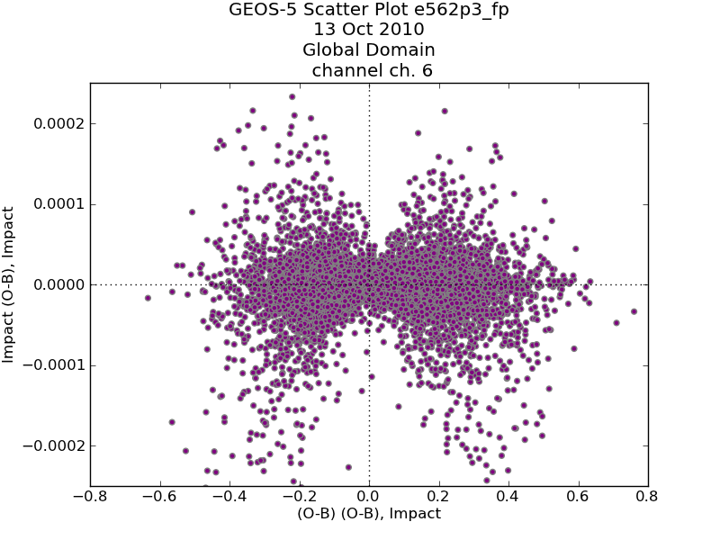
Please note that the first variable specified is along the y axis, while the second one is along the x-axis.
{kind=link}
{kind=link}
{kind=link}
{kind=link}
{kind=link}
{kind=link}
{kind=link}
{kind=link}
{kind=link}
{kind=link}
{kind=link}
{kind=link}
{kind=link}
{kind=link}
{kind=link}
{kind=link}
{kind=link}
{kind=link}
{kind=link}
{kind=link}
{kind=link}
{kind=link}
{kind=link}
{kind=link}
{kind=link}
{kind=link}
{kind=link}
{kind=link}
{kind=link}
{kind=link}
{kind=link}
{kind=link}
{kind=link}
{kind=link}
{kind=link}
{kind=link}